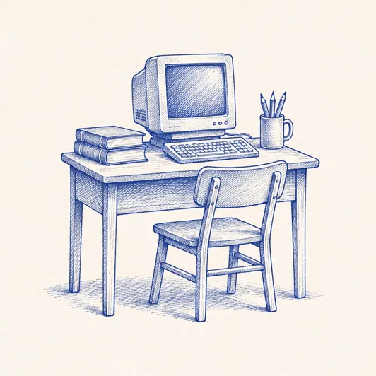
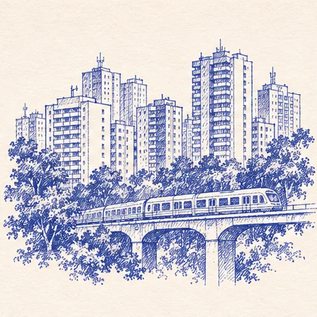
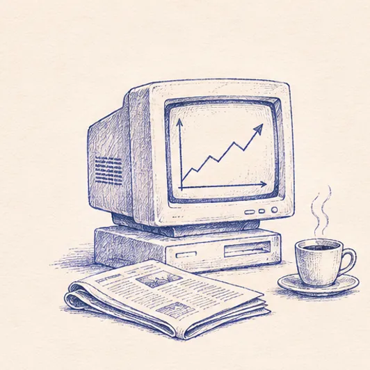
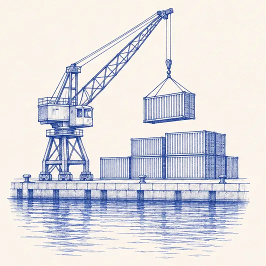
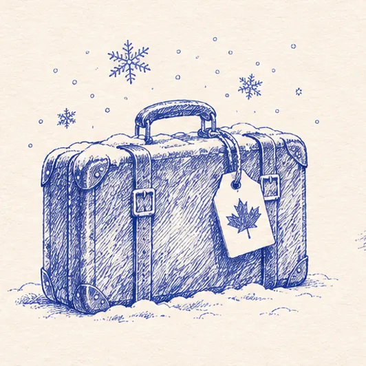
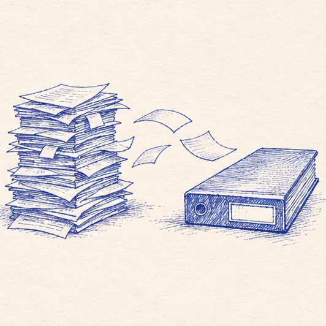

The long way here
More than ten years of building software, from São Paulo to Ottawa, in three languages. Much of it where security and data couldn't fail: guiding teams, coordinating with others, and explaining the risks to managers and executives.

First code
A local IT course taught me to code. Soon I was building websites for other companies, and I haven't stopped since.
Java, JavaScript, HTML and CSS; my first websites.

Other people's offices
For five years, a staffing firm placed me inside client companies, building the systems their work ran on. I turned their needs into specs, then designed, built, tested and maintained the software and the data behind it, guiding teams with Scrum.
Requirements and specs, system design and testing; data models, data cleaning, statistics and machine learning; Scrum and Agile.

Software and data
At UOL, the data was sensitive and the products depended on it. As software engineer and data scientist, I built the predictive models, designed the data models behind architecture decisions, and kept access locked down with OAuth.
Java and Quarkus services with OAuth, on AWS and Kubernetes; Jenkins CI/CD; PostgreSQL, MySQL and MongoDB; predictive models.
Keys and doors
When US defence and government customers couldn't sign in or a server went down, their security was on the line. I assessed the risk, then patched, upgraded and recovered their systems with customer and internal teams. Banks and government entities also came to me for advice.
Red Hat Single Sign-On (OpenID Connect, OAuth 2.0, SAML, two-factor), JBoss EAP, OpenShift, LDAP, Kerberos, TLS certificates.

The platform underneath
I designed the Go services and Kubernetes operators behind the cloud platform Randoli's products run on, with security and cost in mind. Today their AI agent runs on it too. I also helped implement a reverse proxy for a UK bank.
Go, Java and TypeScript microservices; Kubernetes operators in Go; Kafka; a reverse proxy on cloud tooling; CI/CD; single sign-on; AWS, Azure and GCP.

The move
New country, new winters, same habit of testing everything. When I moved, Randoli kept me on, now as an employee in Canada.
Working languages: English, French and Portuguese.

Data people decide with
On the House of Commons IT Operations team, I build reports and machine-learning models used across the House. I inventoried the old in-house reports so managers could plan the move. Now I'm helping move them to Microsoft Fabric, a cloud data platform, to cut costs and tighten security.
Microsoft Fabric (data warehouse, ETL pipelines, workspaces with per-team access), Power BI, SQL and Python; regression, clustering and neural networks.
Built for the community
Evenings and weekends, I build apps, agents and models that run on modest hardware, some fully offline. I write the spec and acceptance criteria, coding agents draft, and nothing ships until tests pass and I've reviewed every change. Two are live on Google Play.
Flutter, Go and Python; on-device models with ONNX Runtime, sherpa-onnx and llama.cpp; agent memory and harnesses; AI coding agents.